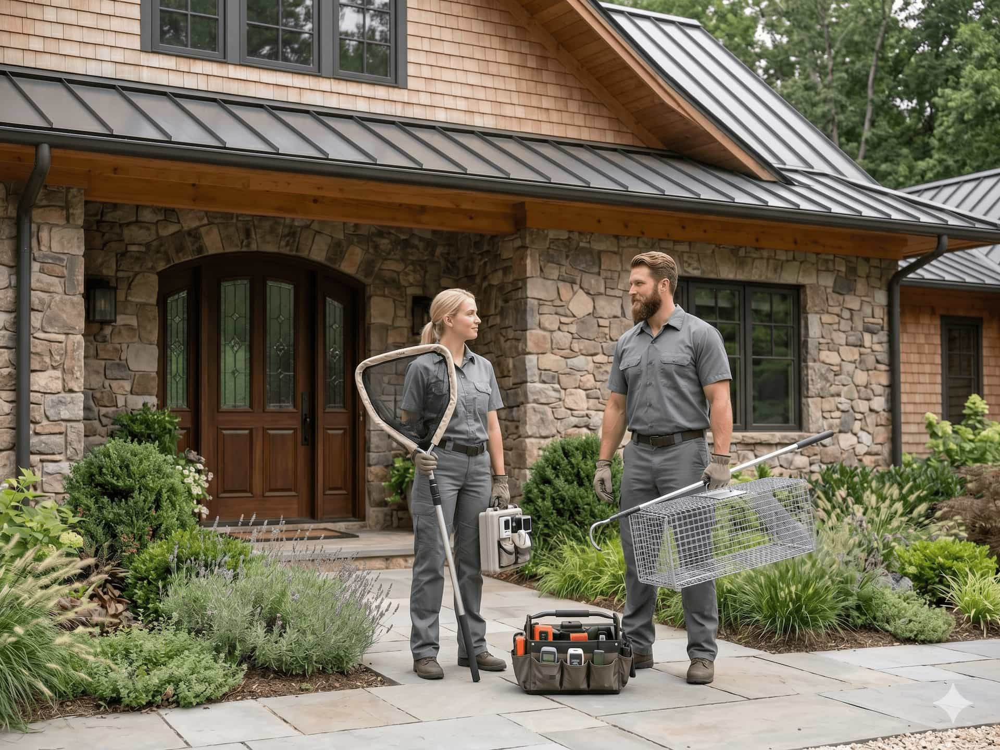
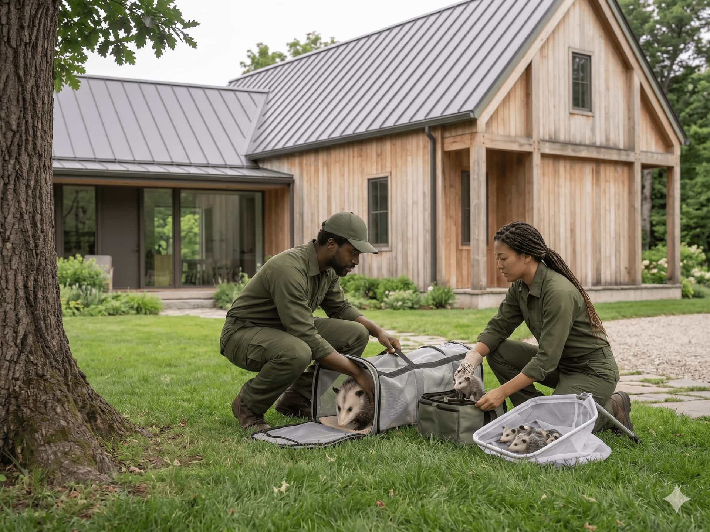

How will the provider inspect the issue?
Ask whether they review rooflines, vents, attic access, crawlspaces, garages, or other visible activity zones.

Explore common wildlife service categories and request quotes from independent local providers before choosing who to contact.
These categories help homeowners organize the first step. WILD GUARD does not perform services directly, but helps connect requests with independent local provider options.

Compare local providers for humane removal options when animal activity appears around attics, garages, crawlspaces, rooflines, or exterior areas.

Find provider options for raccoon activity and ask about inspection, access points, removal approach, and prevention.

Explore local provider matches for squirrel activity, nesting signs, exterior openings, and possible exclusion work.

Connect with providers who can discuss inspection timing, humane exclusion, seasonal considerations, and local rules.

Compare provider options for bird activity around gutters, vents, rooflines, solar panels, ledges, and exterior structures.

Find providers who can discuss sealing openings, screening vents, reducing repeat wildlife access, and planning prevention-focused next steps.
A calm comparison process can help homeowners avoid rushed decisions. Ask each independent provider how they evaluate the concern, what work is included, and what responsibilities remain with the homeowner.
Start ComparingAsk whether they review rooflines, vents, attic access, crawlspaces, garages, or other visible activity zones.
Discuss humane removal, exclusion, prevention, cleanup, and whether the provider follows local wildlife rules.
Review inspection fees, service scope, materials, follow-up visits, exclusions, warranty terms, and payment timing.
Homeowners should confirm license and insurance requirements directly with each provider before hiring.
Wildlife concerns are not all the same. These signals can help homeowners decide which provider category may be the best starting point.
Scratching, running, or thumping sounds may point toward attic-focused categories such as squirrels, raccoons, bats, or general wildlife activity.
Gaps near vents, soffits, fascia, roof intersections, or crawlspace areas may be relevant to exclusion and prevention discussions.
Signs around decks, garages, patios, or attic spaces can help providers understand the type of activity before scheduling.
If animals return repeatedly, homeowners may want to compare providers who discuss both removal options and prevention planning.
You do not need to know the exact animal type. A few simple details can help independent providers estimate the right service category, inspection needs, and next steps.
Send a short request with your ZIP code and what you noticed. WILD GUARD can help connect you with independent local provider options for the right service category.

Tell us what you noticed and where the activity appears.
Review independent provider options for your service category.
Confirm scope, pricing, timing, credentials, and local rules.
Select the provider that fits your home and concern best.